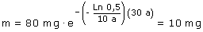

b)
Ecuación de desintegración en función de la masa:


Vamos a justificar el resultado:
Cada 10 años que pasan, la cantidad de sustancia radiactiva se reduce a la mitad, por tanto la cantidad de sustancia restante será:
|
Inicio |
10 años |
20 años |
30 años |
||
|
80 mg |
40 mg |
20 mg |
10 mg |
Efectivamente: en 30 años quedarán 10 mg de sustancia radiactiva